Talend对接FusionInsight¶
适用场景¶
Talend 7.2.1 ↔ FusionInsight HD 6.5 (HDFS/HBase/Hive)
准备工作¶
-
登录FusionInsight Manager创建一个“人机”用户，例如：developuser，具体请参见FusionInsight HD产品文档的
管理员指南->系统设置->权限设置->用户管理->创建用户章节。给developuser用户授予所有访问权限，包含但不限于HDFS、HIVE、HBASE。 -
登录FusionInsight Manager的
系统->用户->更多（developuser）->下载认证凭证，下载developuser对应的认证凭证。解压后，将krb5.conf和user.keytab放在C:\developuser\目录下(developuser文件夹不存在则创建)，复制krb5.conf文件并重命名为krb5.ini，放在C:\Windows目录下。 -
已完成FusionInsight HD客户端安装，具体请参见FusionInsight HD产品文档的
应用开发指南->安全模式->安全认证->配置客户端文件章节。FusionInsight HD客户端解压于本地C:\talend\FusionInsight_Cluster_1_Services_ClientConfig -
Zookeeper的Kerberos认证需要指定jaas配置文件。创建连接zookeeper的jaas配置文件，如
C:\developuser\jaas.conf，内容格式如下：Client { com.sun.security.auth.module.Krb5LoginModule required useKeyTab=true keyTab="c:/developuser/user.keytab" principal="developuser@HADOOP.COM" useTicketCache=false storeKey=true debug=true; }; -
本地
C:\Windows\System32\drivers\etc\hosts已添加FusionInsight集群节点的IP与hostname的映射。 -
本地已安装Hadoop服务（可从https://hadoop.apache.org/releases.html下载Hadoop二进制），该项可选。如果本地没安装Hadoop服务，talend在运行过程中会出现与Hadoop相关的错误日志，但不影响实际运行结果。
安装Talend¶
操作场景¶
安装Talend Open Studio for Big Data
操作步骤¶
- 从https://www.talend.com/products/big-data/big-data-open-studio/下载Window版的Talend。

- 解压下载安装包，点击TOS_BD-win-x86_64.exe启动Talend Open Studio for Big Data。点击
我同意。

- 点击
完成，默认创建Local_Project的工程。

- 选择安装必须的第三方库，点击
Finish。

- 选择
我接受所选许可协议的条款，点击全部接受。

- 在右下角可看到安装进度。
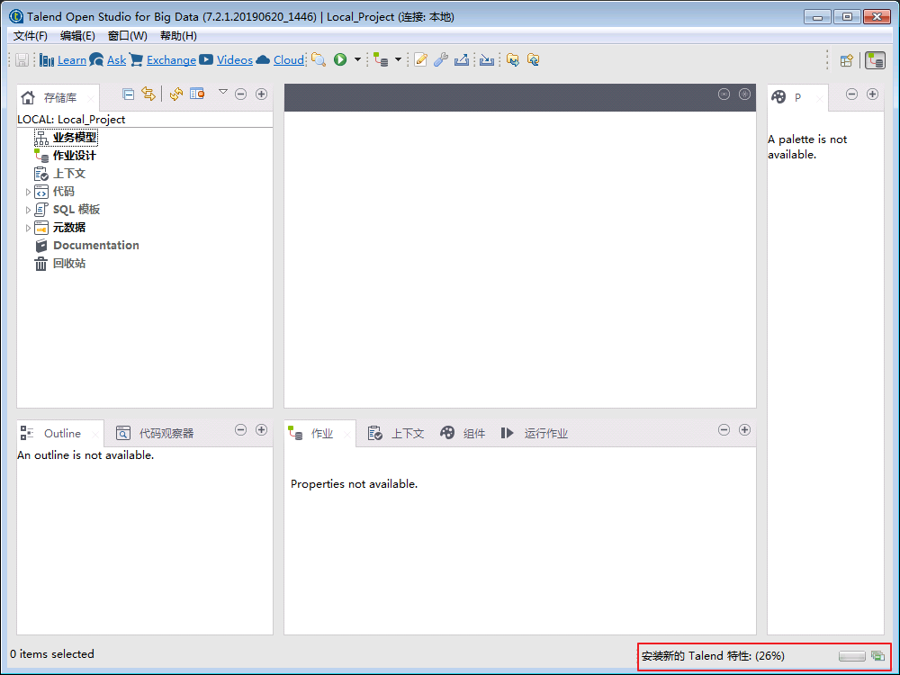
创建Hadoop服务¶
操作场景¶
创建包含HDFS、HIVE、HBASE服务的Hadoop集群
前提条件¶
-
已完成准备工作。
-
将FusionInsight客户端HDFS、HIVE、HBASE以下相关的配置文件拷贝至
C:\teland\config目录下。 -
C:\talend\FusionInsight_Cluster_1_Services_ClientConfig\HDFS\config的hdfs-site.xml、core-site.xml。 -
C:\talend\FusionInsight_Cluster_1_Services_ClientConfig\Hive\config的hive-site.xml、hivemetastore-site.xml。 -
C:\talend\FusionInsight_Cluster_1_Services_ClientConfig\HBase\config的hbase-site.xml。 -
C:\talend\FusionInsight_Cluster_1_Services_ClientConfig\Yarn\config的mapred-site.xml、yarn-site.xml。
操作步骤¶
创建Hadoop集群¶
- 打开
Talend Open Studio for Big Data，选择元数据->Hadoop Cluster，右键Hadoop Cluster选择Create Hadoop Cluster。

- “名称”输入“FusionInsight”，点击
Next。

- 选择
从本地文件导入配置，点击Next。
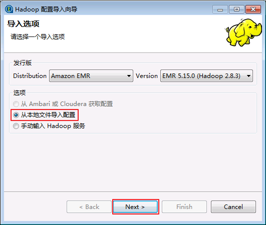
- 点击
浏览，选择目录C:\talend\config，默认全选，点击Finish。

- “Distribution”选择
Custom - Unsuported，点击下拉框右边的按钮导入HDFS、HIVE、HBASE相关的jar包。

- 点击
Cancel取消自动弹出的“导入自定义的定义”窗口。

- 选择“HDFS/HCatalog/Oozie”，点击按钮添加HDFS相关的jar包。
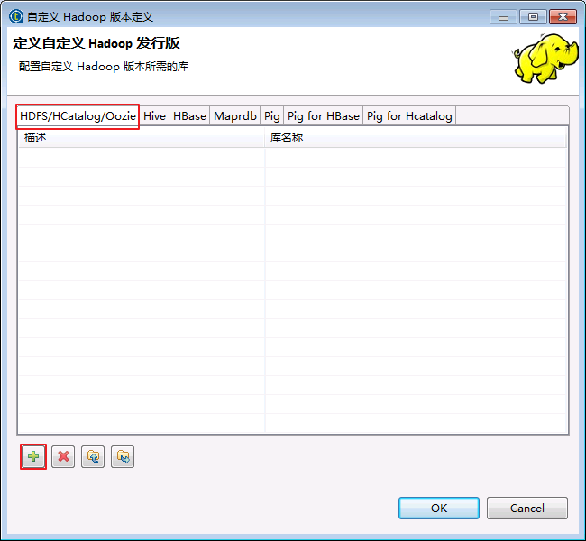
- 选择
外部库，点击浏览，选择C:\talend\FusionInsight_Cluster_1_Services_ClientConfig\HDFS\FusionInsight-Hadoop-3.1.1.tar.gz\hadoop\share\hadoop\hdfs目录下所有的jar包，点击OK导入jar包。


- 按照同样的方法，选择“HDFS/HCatalog/Oozie”，导入
C:\talend\FusionInsight_Cluster_1_Services_ClientConfig\HDFS\FusionInsight-Hadoop-3.1.1.tar.gz\hadoop\share\hadoop\common和C:\talend\FusionInsight_Cluster_1_Services_ClientConfig\HDFS\FusionInsight-Hadoop-3.1.1.tar.gz\hadoop\share\hadoop\common\lib目录下所有的jar包。
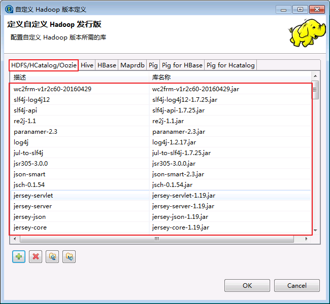
- 按照同样的方法，选择“Hive”，导入
C:\talend\FusionInsight_Cluster_1_Services_ClientConfig\Hive\jdbc目录下所有的jar包。
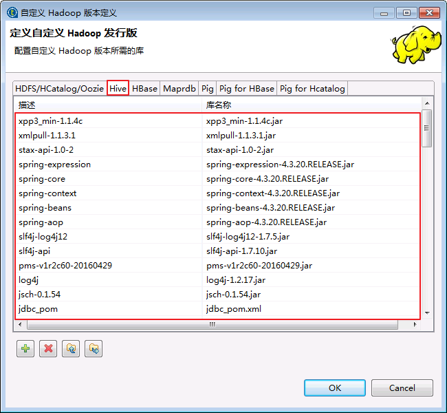
- 按照同样的方法，选择“HBase”，导入
C:\talend\FusionInsight_Cluster_1_Services_ClientConfig\HBase\FusionInsight-HBase-1.3.1.tar.gz\hbase\lib目录下所有的jar包。完成后，点击OK。

-
配置Kerberos认证。“Custom->Authentication”选择
Kerberos。 -
勾选
Authentication->Enable Kerberos security，输入信息如下：Namenode Principal = hdfs/hadoop.hadoop.com@HADOOP.COM 资源管理器主体 = mapred/hadoop.hadoop.com@HADOOP.COM 作业历史记录主体 = mapred/hadoop.hadoop.com@HADOOP.COM 备注： Namenode Principal的取值为hdfs-site.xml的dfs.namenode.kerberos.principal的value值； 资源管理器主体的取值为yarn-site.xml的yarn.resourcemanager.principal的value值； 作业历史记录主体的取值为mapred-site.xml的mapreduce.jobhistory.principal的value值。 -
勾选
Authentication->Use a keytab to authenticate，输入信息如下：Principal = developuser Keytab = C:/developuser/user.keytab 备注： Principal为FusionInsight Manager的用户名，Keytab为用户developuser的认证凭据。
-
配置Hadoop属性，点击
Hadoop属性右边的按钮。
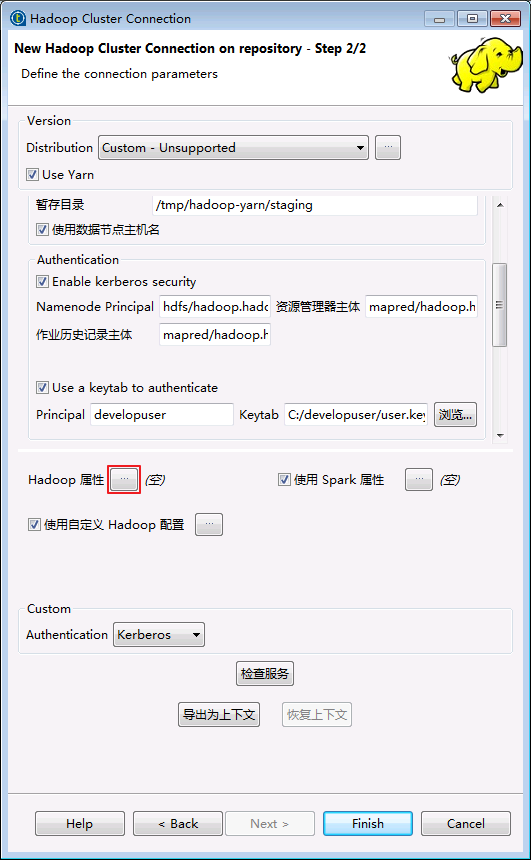
-
点击按钮，增加以下Hadoop属性。增加完毕，点击
OK。 -
增加core-site.xml的hadoop.security.authentication和hadoop.rpc.protection的属性及其对应的value值；
-
增加hdfs-site.xml的dfs.namenode.rpc-address.hacluster.*，dfs.ha.namenodes.hacluster、dfs.nameservices、dfs.client.failover.proxy.provider.hacluster的属性及其对应的value值。
配置示例如下：
hadoop.security.authentication = Kerberos
hadoop.rpc.protection = privacy
dfs.namenode.rpc-address.hacluster.141 = euleros-hd02:25000
dfs.namenode.rpc-address.hacluster.142 = euleros-hd03:25000
dfs.ha.namenodes.hacluster = 141,142
dfs.nameservices = hacluster
dfs.client.failover.proxy.provider.hacluster = org.apache.hadoop.hdfs.server.namenode.ha.AdaptiveFailoverProxyProvider
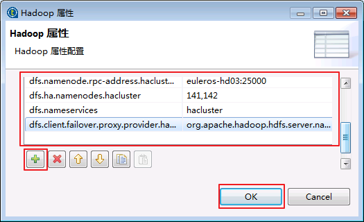
- 确认默认勾选
使用自定义Hadoop属性，点击检查服务。

- 检查返回100%，则Hadoop集群配置成功，点击
Close。如果返回错误日志，则根据错误日志提示修正问题后，重新点击检查服务，直至检查返回100%。

- 点击
Finish，则可在元数据->Hadoop Cluster看到新建的“FusionInsight”集群，包含HDFS、HIVE、HBASE服务。

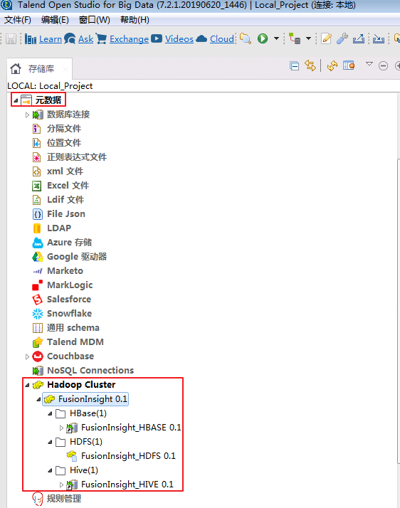
配置HIVE服务¶
- 选择
元数据->Hadoop Cluster->FusionInsight->Hive(1)->FusionInsight_HIVE，右键FusionInsight_HIVE选择Edit Hive。

- 点击
Next。
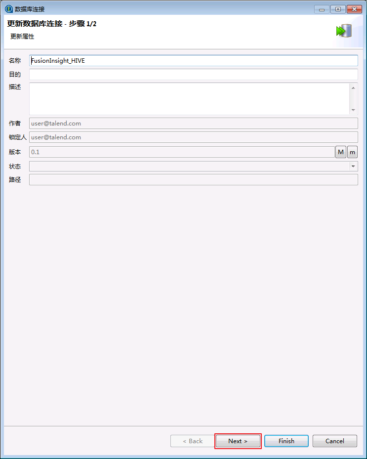
- 需要更新的配置如下，其余的保持不变。
hive模式 = Standalone hive服务器版本 = Hive Server2 -- jdbc:hive2:// 登录名 = developuser 密码 = Huawei@123 服务器 = 172.16.4.21:24002,172.16.4.22:24002,172.16.4.23 端口 = 24002 DataBase = default 附加JDBC设置 = ;serviceDiscoveryMode=zooKeeper;zooKeeperNamespace=hiveserver2;sasl.qop=auth-conf;auth=KERBEROS;user.principal=developuser;user.keytab=C:/developuser/user.keytab 说明：以上信息可根据JDBC方式连接Hive服务的配置填写。

- 点击
测试连接，返回连接成功，点击OK，点击Finish完成配置。
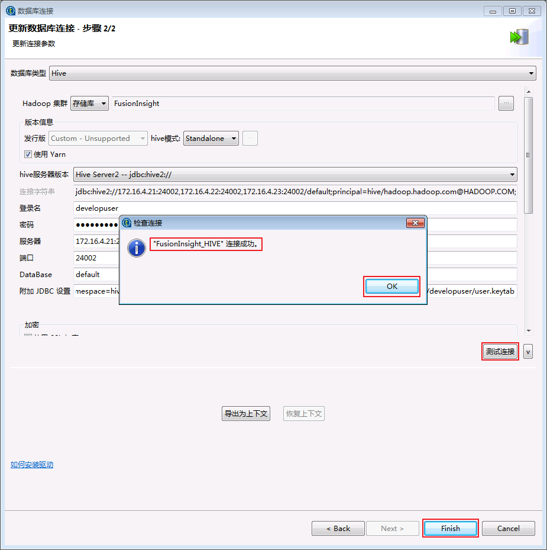
Talend对接FusionInsight HDFS¶
操作场景¶
Talend中配置HDFS解析器，对接FusionInsight HDFS接口，并从Fusion Insight集群的HDFS文件系统下载文件至本地，或者将本地文件上传至Fusion Insight集群的HDFS文件系统。
前提条件¶
-
已完成准备工作
-
已完成Talend Open Studio for Big Data的安装
-
已创建包含HDFS服务的Hadoop集群
HDFS Connection 操作步骤¶
-
选择
作业设计，右键选择创建作业。
-
“名称”输入“hdfsConnection”，点击
Finish。
-
选择作业
hdfsConnection，在Palette面板输入“hdfsConnection”搜索，将搜索返回的“tHDFSConnection”组件拖至Disigner区。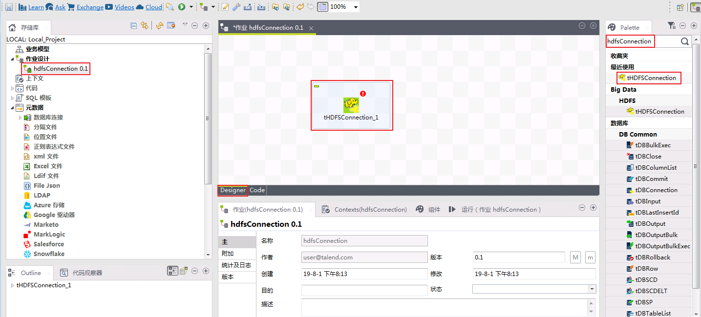
-
点击选中“tHDFSConnection_1”，切换至“组件”，“属性类型”选择
存储库，点击右边的按钮选择FusionInsight_HDFS。如果提示“此组件tHDFSConnection需要至少安装一个外部jar。”，则点击安装。
-
点击
下载并安装所有可用的模块。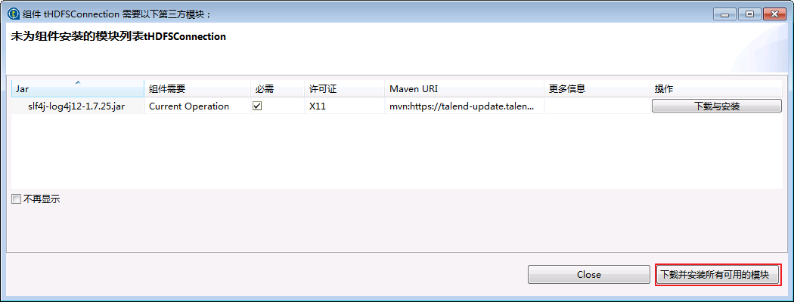
-
等待所有可用的模块下载并安装完之后，切换至“运行（作业hdfsConnection）”，点击
运行按钮。返回结果如下图所示，则表示Talend对接FusionInsight HDFS成功。
HDFS Get操作步骤¶
从Fusion Insight集群的HDFS文件系统下载文件至本地。
-
登录FusionInsight集群客户端，执行
hdfs dfs -ls /tmp命令确认/tmp目录已存在文件“getFromHdfs.csv”，内容随意。
-
创建作业“hdfsGet”，加入tHDFSConnection、tHDFSGet组件。
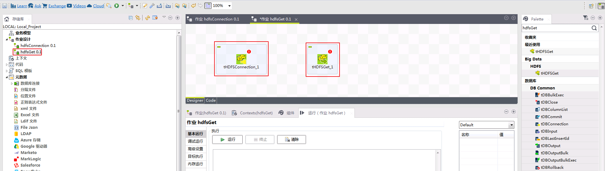
-
点击选中
tHDFSConnection_1，右键选择触发器->子作业正常时，连接至tHDFSGet_1。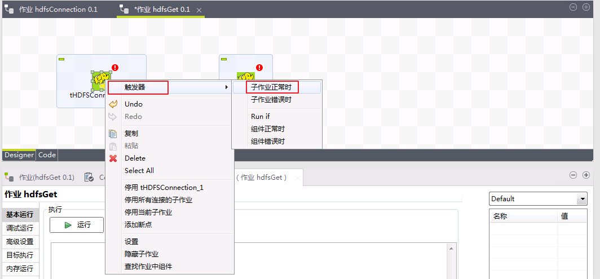

-
点击选中
tHDFSConnection_1组件，“属性类型”选择存储库，点击右边的按钮选择FusionInsight_HDFS。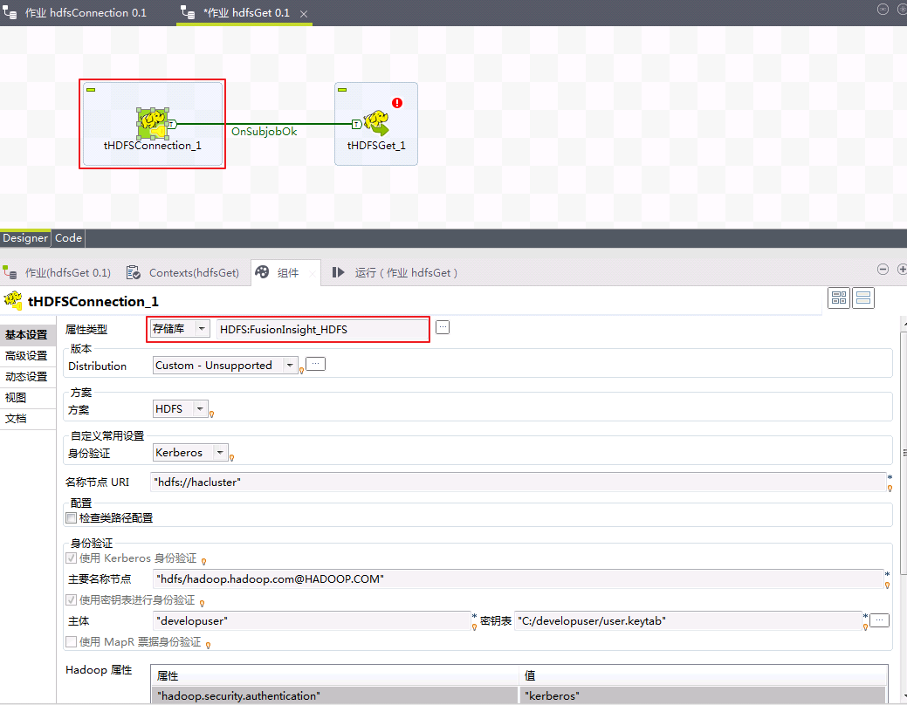
-
点击选中
tHDFSGet_1组件，勾选使用一个现有连接，“组件列表”选择tHDFSConnection_1，“HDFS目录”选择/tmp，“本地目录”选择C:/talend/testFile(可选择任意的本地目录)，在“文件掩码”输入在HDFS的/tmp目录下需要获取的文件名称getFromHdfs.csv。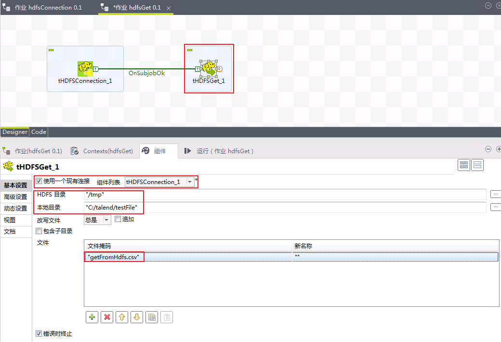
-
切换至“运行（作业hdfsGet）”，点击
运行按钮。返回结果如下图所示，则表示Talend从FusionInsight HDFS下载文件成功。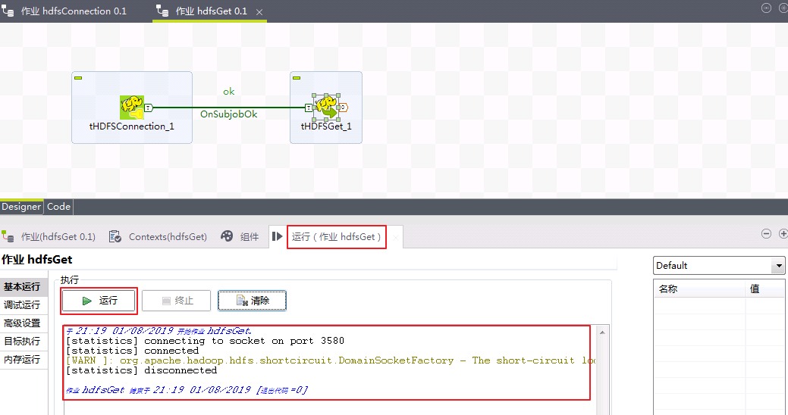
-
getFromHdfs.csv已下载至本地
C:\talend\testFile。
HDFS Put 操作步骤¶
从本地上传文件至Fusion Insight集群的HDFS文件系统。
-
创建作业“hdfsPut”，加入tHDFSConnection、tHDFSPut组件，tHDFSConnection_1的子作业正常时执行tHDFSPut_1。

-
点击选中
tHDFSConnection_1组件，“属性类型”选择存储库，点击右边的按钮选择FusionInsight_HDFS。
-
点击选中
tHDFSPut_1组件，勾选使用一个现有连接，“组件列表”选择tHDFSConnection_1，“本地目录”选择C:/talend/testFile，“HDFS目录”选择/tmp，在“文件掩码”输入需要上传至HDFS文件系统的文件名称putToHdfs.csv。
说明：C:/talend/testFile/putToHdfs.csv为本地已存在文件，内容随意。

-
切换至“运行（作业hdfsPut）”，点击
运行按钮。返回结果如下图所示，则表示从Talend上传文件putToHdfs.csv至FusionInsight HDFS文件系统成功。
-
登录FusionInsight集群客户端，执行
hdfs dfs -ls /tmp命令检查putToHdfs.csv已上传至/tmp目录。
Talend对接FusionInsight Hive¶
操作场景¶
Talend中配置JDBC解析器，对接FusionInsight Hive接口，进行建表、查表、插入数据等操作。
前提条件¶
-
已完成准备工作
-
已完成Talend Open Studio for Big Data的安装
-
已创建包含Hive服务的Hadoop集群和完成Hadoop集群的Hive服务配置。
Hive Connection 操作步骤¶
-
选择
作业设计，右键选择创建作业。
-
“名称”输入“hiveConnection”，点击
Finish。
-
选择作业
hiveConnection，加入tHiveConnection、tHiveClose组件。
-
点击选中“tHiveConnection_1”，切换至“组件”，“属性类型”选择
存储库，点击右边的按钮选择FusionInsight_HIVE。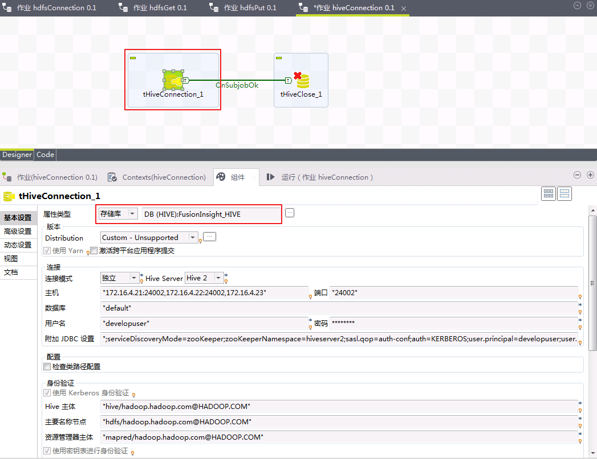
-
点击选中“tHiveClose_1”，切换至“组件”，“组件列表”选择
tHiveConnection_1。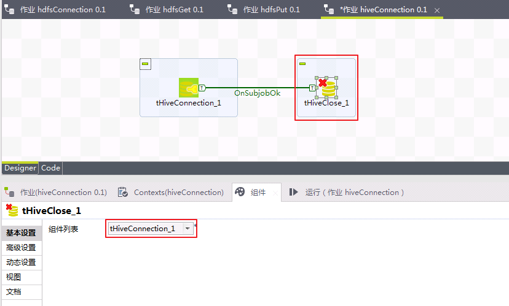
-
切换至“运行（作业hiveConnection）”，点击
运行按钮。返回结果如下图所示，则表示Talend对接FusionInsight Hive成功。
Hive Create Table 操作步骤¶
使用Talend创建表talendHiveCreate，并将/tmp/putToHdfs.csv的数据传入表talendHiveCreate。
-
登录FusionInsight集群客户端，执行
hdfs dfs -ls /tmp命令确认/tmp目录已存在文件“putToHdfs.csv”。putToHdfs.csv的内容如下(包含两列，两列之间用分号隔开)：
1;EcitQU 2;Hyy6RC 3;zju1jR 4;R9fex9 5;EU2mVq -
创建作业“hiveCreateTable”，加入tHiveConnection、tHiveCreateTable、tHiveLoad、tHiveClose组件，上一个组件的子作业正常时执行下一个组件。

-
点击选中“tHiveConnection_1”，切换至“组件”，“属性类型”选择
存储库，点击右边的按钮选择FusionInsight_HIVE。
-
点击选中“tHiveCreateTable_1”，勾选
使用一个现有连接，“组件列表”选择tHiveConnection_1，点击“编辑schema”右边的按钮设计表结构为两列，列名分别id和name，“表名称”输入talendHiveCreate，“表操作”选择如果表不存在则创建表，“格式”选择文本文件，其余选项为默认。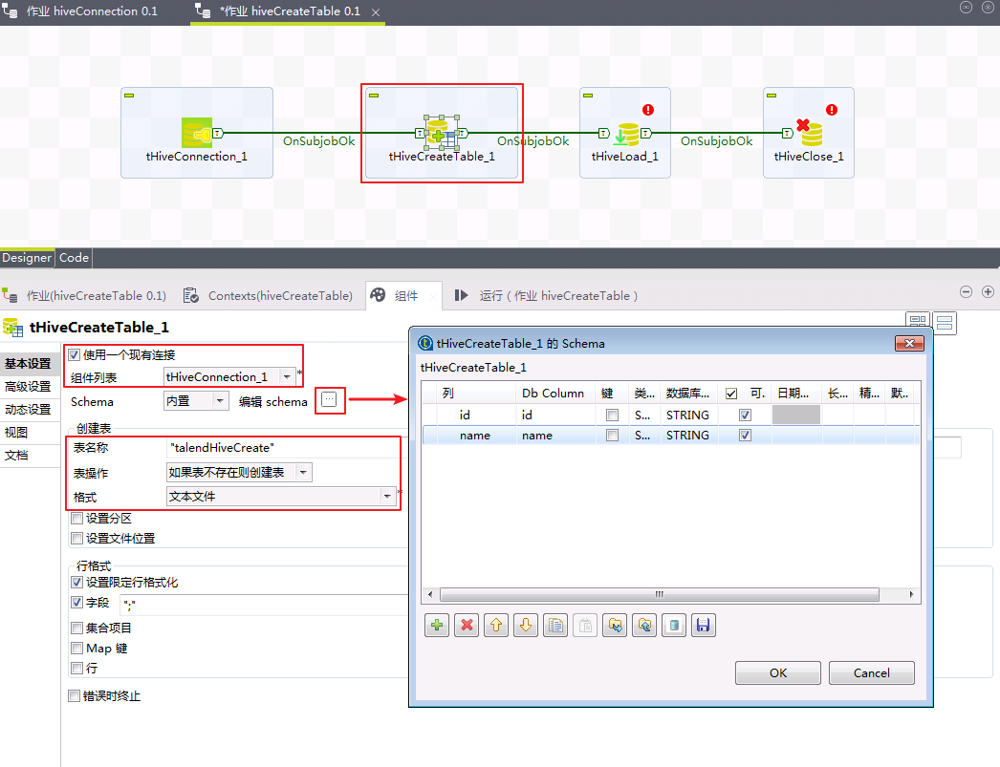
-
点击选中“tHiveLoad_1”，勾选
使用一个现有连接，“组件列表”选择tHiveConnection_1，“加载操作”选择加载，“文件路径”输入/tmp/putToHdfs.csv，“表名称”输入talendHiveCreate，其余选项默认。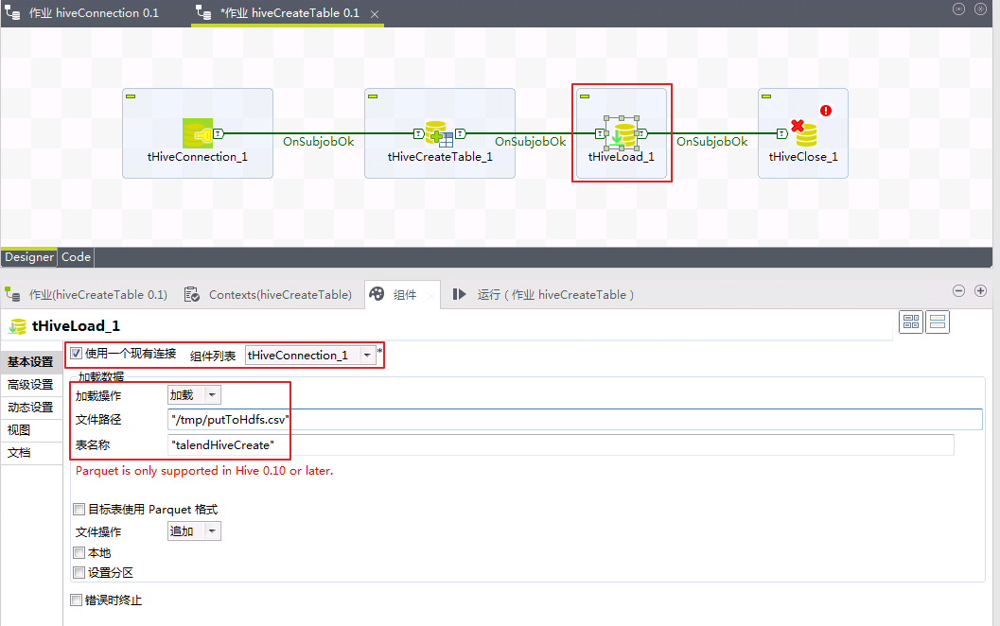
-
点击选中“tHiveClose_1”，“组件列表”选择
tHiveConnection_1。
-
切换至“运行（作业hiveCreateTable）”，点击
运行按钮。返回结果如下图所示，则表示Talend使用Hive创建表talendHiveCreate，并将putToHdfs.csv的数据输入到表talendHiveCreate成功。
-
登录FusionInsight集群客户端，使用beeline执行
select * from talendHiveCreate;命令查询表createdTableTalend。
Hive Input 操作步骤¶
使用Talend查询Hive表的数据。
-
确认已存在表talendHiveCreate。登录FusionInsight集群客户端，使用beeline执行
select * from talendHiveCreate;命令查询表createdTableTalend，返回数据如下。 -
创建作业“hiveInput”，加入tHiveConnection、tHiveInput、tHiveClose、tLogRow组件，上一个组件的子作业正常时执行下一个组件。
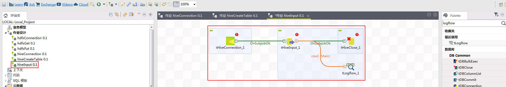
-
点击选中“tHiveConnection_1”，切换至“组件”，“属性类型”选择
存储库，点击右边的按钮选择FusionInsight_HIVE。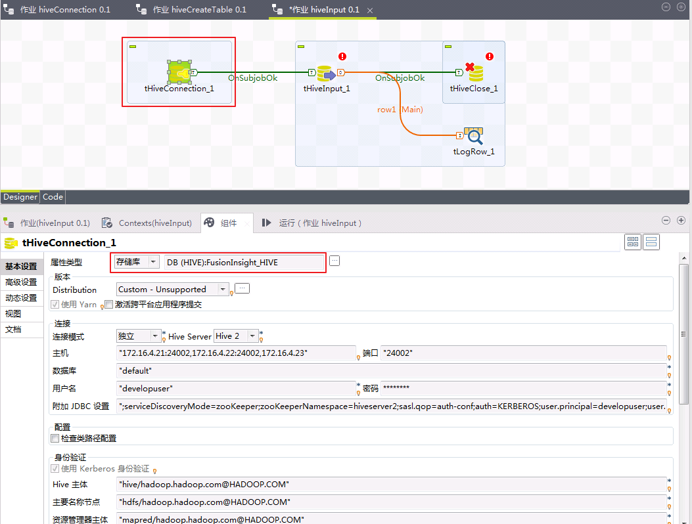
-
点击选中“tHiveInput_1”，勾选
使用一个现有连接，“组件列表”选择tHiveConnection_1，点击“编辑schema”右边的按钮设计表结构为两列，列名分别id和name，“表名称”输入talendHiveCreate，“查询”输入"select * from talendHiveCreate"，其余选项默认。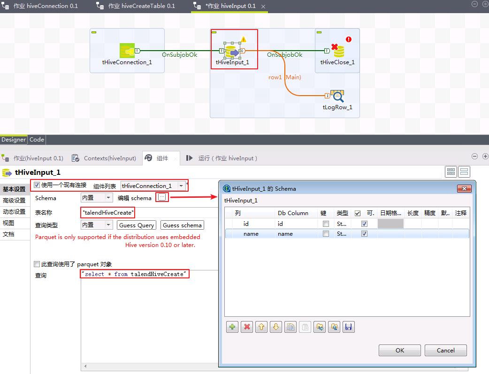
-
点击选中“tHiveClose_1”，“组件列表”选择
tHiveConnection_1。
-
tLogRow组件使用默认配置。
-
切换至“运行（作业hiveInput）”，点击
运行按钮。返回结果如下图所示，则表示Talend查询表createdTableTalend数据成功。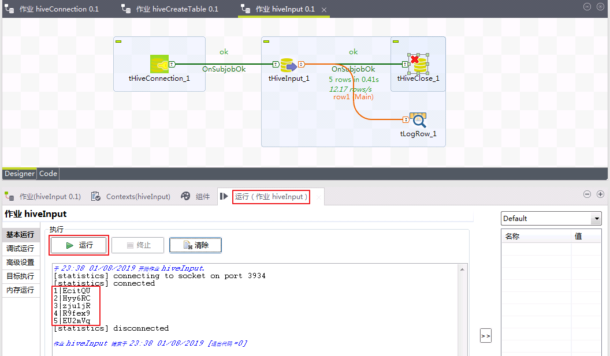
Hive Row 操作步骤¶
使用Talend插入数据至Hive表。
- 确认已存在表talendHiveCreate。登录FusionInsight集群客户端，使用beeline执行
select * from talendHiveCreate;命令查询表createdTableTalend，返回数据如下。
- 创建作业“hiveRow”，加入tHiveConnection、tHiveRow、tHiveClose组件，上一个组件的子作业正常时执行下一个组件。
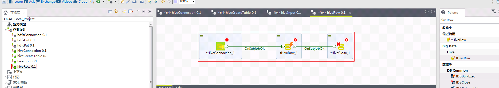
- 点击选中“tHiveConnection_1”，切换至“组件”，“属性类型”选择
存储库，点击右边的按钮选择FusionInsight_HIVE。

- 点击选中“tHiveRow_1”，勾选
使用一个现有连接，“组件列表”选择tHiveConnection_1，点击“编辑schema”右边的按钮设计表结构为两列，列名分别id和name，“表名称”输入talendHiveCreate，“查询”输入"insert into talendHiveCreate values(123,'shenzhen')"，其余选项默认。
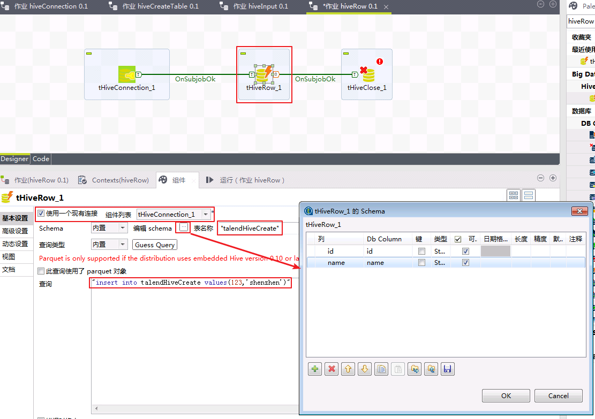
- 点击选中“tHiveClose_1”，“组件列表”选择
tHiveConnection_1。

- 切换至“运行（作业hiveRow）”，点击
运行按钮。返回结果如下图所示，则表示Talend插入表createdTableTalend数据成功。

- 登录FusionInsight集群客户端，使用beeline执行
select * from talendHiveCreate;命令查询表createdTableTalend，返回数据已包含新增的数据。
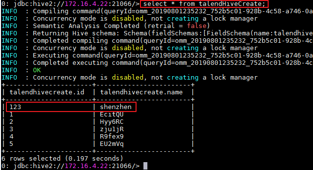
Talend对接FusionInsight HBase¶
操作场景¶
Talend中配置HBase解析器，对的FusionInsight HBase接口，进行建表、查询、插入数据等操作。
前提条件¶
-
已完成准备工作
-
已完成Talend Open Studio for Big Data的安装
-
已创建包含HBase服务的Hadoop集群
-
已在IntelliJ IDEA使用
Import project from external model ~ Eclipse方式导入C:\talend\FusionInsight_Cluster_1_Services_ClientConfig\HBase\hbase-example，并且调测TestMain.java通过。
HBase Connection 操作步骤¶
-
导出FusionInsight HD客户端中Hbase样例代码中的LoginUtil类。
-
在IntelliJ IDEA打开
C:\talend\FusionInsight_Cluster_1_Services_ClientConfig\HBase\hbase-example工程，选择File > Project Structure...菜单项。
-
选择
Artifacts->Add->JAR->Empty。
-
导出jar包的名称设置为
hbase-loginUtil.jar，“Output directory”选择C:\talend\testFile，双击“Available Elements”的'hbase-example' compile output将它加载到左边列表，点击OK。
-
选中“hbase-example”工程com.huawei.hadoop.security的LoginUtil.java，选择
Build->Build Artifacts...
-
选择
hbase-loginUtil.jar->Build。
-
编译完成后，在本地
C:\talend\testFile产生“hbase-loginUtil.jar”。
-
选择
作业设计，右键选择创建作业。

- “名称”输入“hbaseConnection”，点击
Finish。
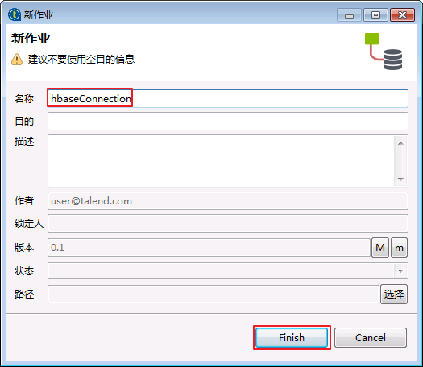
- 选择作业
hbaseConnection，加入tLibraryLoad、tHBaseConnection、tJava、tHBaseClose组件，上一个组件的子作业正常时执行下一个组件。
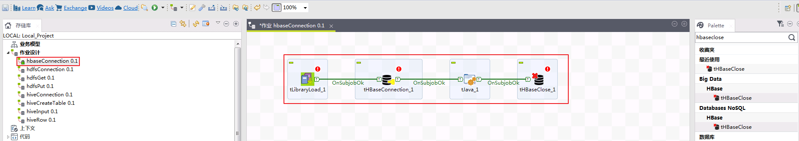
- 点击选中“tLibraryLoad_1”，切换至“组件”，点击右边的按钮选择模块。在弹出窗口，选择
构建库（local m2/nexus），选择安装一个新模块并选择文件C:\talend\testFile\hbase-loginUtil.jar，然后点击检测模块安装状态，检测没问题则OK按钮激活，点击OK。

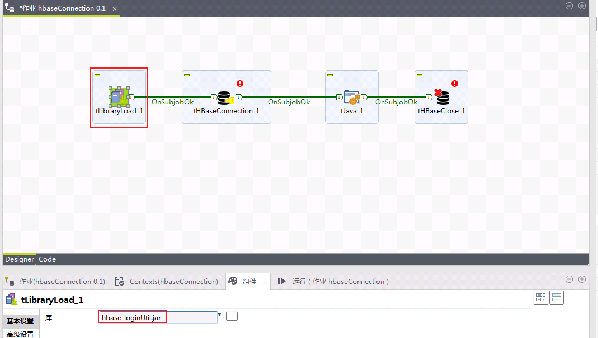
- 点击选中“tHBaseConnection_1”，“属性类型”选择
存储库，点击右边的按钮选择FusionInsight_HBASE，“发行版的Hadoop版本”选择Hadoop 2。如果提示此组件tHbaseConnection需要至少安装一个外部jar。，则点击安装。
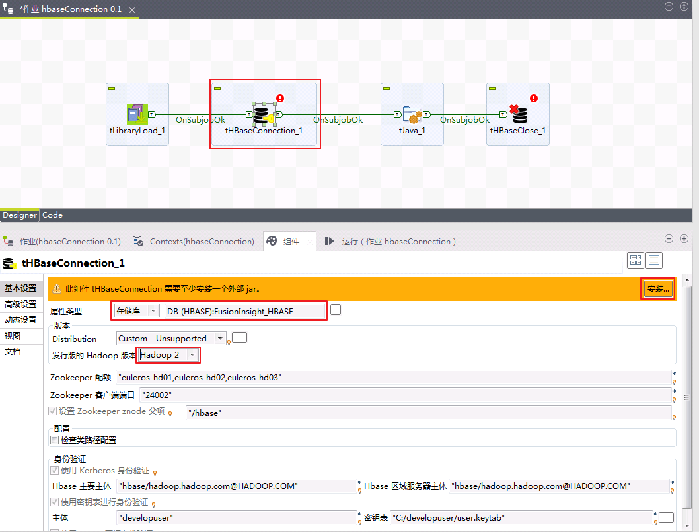
说明：如果“发行版的Hadoop版本”的下拉框没有“Hadoop 2”，只能选择“Hadoop 1”。则确认创建Hadoop集群时，对于HBase服务，是否已导入C:\talend\FusionInsight_Cluster_1_Services_ClientConfig\HBase\FusionInsight-HBase-1.3.1.tar.gz\hbase\lib目录下所有的jar包。
- 点击
下载并安装所有可用的模块，选择我接受所选许可协议的条款，点击全部接受。


说明：如果还提示此组件tHbaseConnection需要至少安装一个外部jar。，点击安装，弹出是jersey-client-1.9.jar，则可以忽略处理。作业运行后，该提示会消失。

- 点击选中“tJava_1”。
-
在“基本设置”的“代码”中输入HBase配置相关的代码。
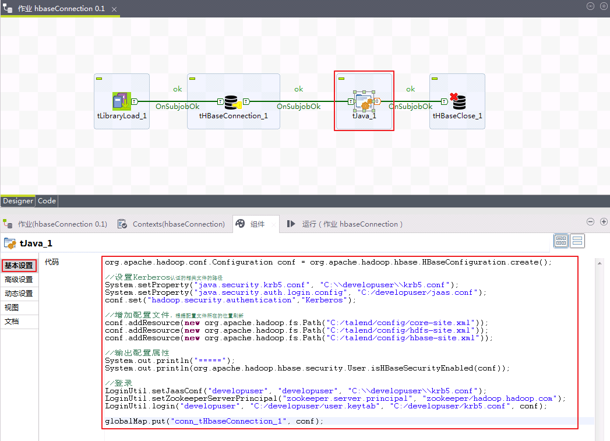
代码示例如下：
org.apache.hadoop.conf.Configuration conf = org.apache.hadoop.hbase.HBaseConfiguration.create(); //设置Kerberos认证的相关文件的路径 System.setProperty("java.security.krb5.conf", "C:\\developuser\\krb5.conf"); System.setProperty("java.security.auth.login.config", "C:/developuser/jaas.conf"); conf.set("hadoop.security.authentication","Kerberos"); //增加配置文件，根据配置文件所在的位置刷新 conf.addResource(new org.apache.hadoop.fs.Path("C:/talend/config/core-site.xml")); conf.addResource(new org.apache.hadoop.fs.Path("C:/talend/config/hdfs-site.xml")); conf.addResource(new org.apache.hadoop.fs.Path("C:/talend/config/hbase-site.xml")); //输出配置属性 System.out.println("====="); System.out.println(org.apache.hadoop.hbase.security.User.isHBaseSecurityEnabled(conf)); //登录 LoginUtil.setJaasConf("developuser", "developuser", "C:\\developuser\\krb5.conf"); LoginUtil.setZookeeperServerPrincipal("zookeeper.server.principal", "zookeeper/hadoop.hadoop.com"); LoginUtil.login("developuser", "C:/developuser/user.keytab", "C:/developuser/krb5.conf", conf); globalMap.put("conn_tHbaseConnection_1", conf); -
在“tJava_1”的“高级设置”的“导入”输入
import com.huawei.hadoop.security.LoginUtil;，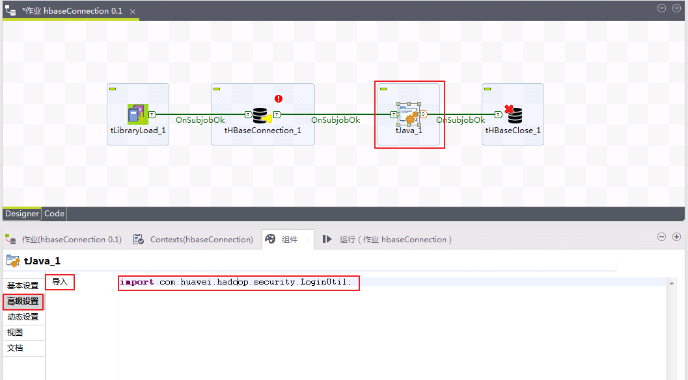
-
点击选中“tHBaseClose_1”，“组件列表”选择
tHBaseConnection_1。

- 切换至“运行（作业hbaseConnection）”，点击
运行按钮。返回结果如下图所示，则表示Talend对接FusionInsight HBase成功。

HBase Input Output 操作步骤¶
Talend通过FusionInsight HBase接口对接成功后，创建表talendHbaseCreate，将本地C:/talend/testFile/putToHdfs.csv的数据传入表talendHbaseCreate，并且从表talendHbaseCreate查询返回数据。
- 确认本地已存在
C:/talend/testFile/putToHdfs.csv。
putToHdfs.csv内容如下：
1;EcitQU
2;Hyy6RC
3;zju1jR
4;R9fex9
5;EU2mVq
- 创建作业“hbaseInputOutput”，加入tLibraryLoad、tHBaseConnection、tJava、tHBaseClose、tFileInputDelimited、tHBaseOutput、tHBaseInput、tLogRow组件，上一个组件的子作业正常时执行下一个组件。

-
tLibraryLoad、tHBaseConnection、tJava、tHBaseClose_1组件的配置请参考“HBase Connection 操作步骤”，tLogRow组件使用默认配置。
-
点击选中“tFileInputDelimited_1”，点击“编辑schema”右边的按钮设计schema为两列，列名分别id和name，“文件名/流”输入
C:/talend/testFile/putToHdfs.csv，其余选项保持默认。
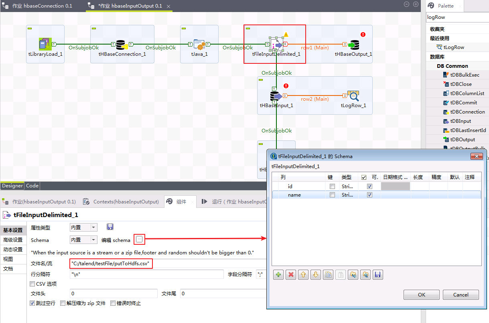
-
点击选中“tHBaseOutput_1”。
-
在“高级配置”中，增加两列，列名分别为id和name，列名必须要用双引号包括，要不运行时会返回语法错误。
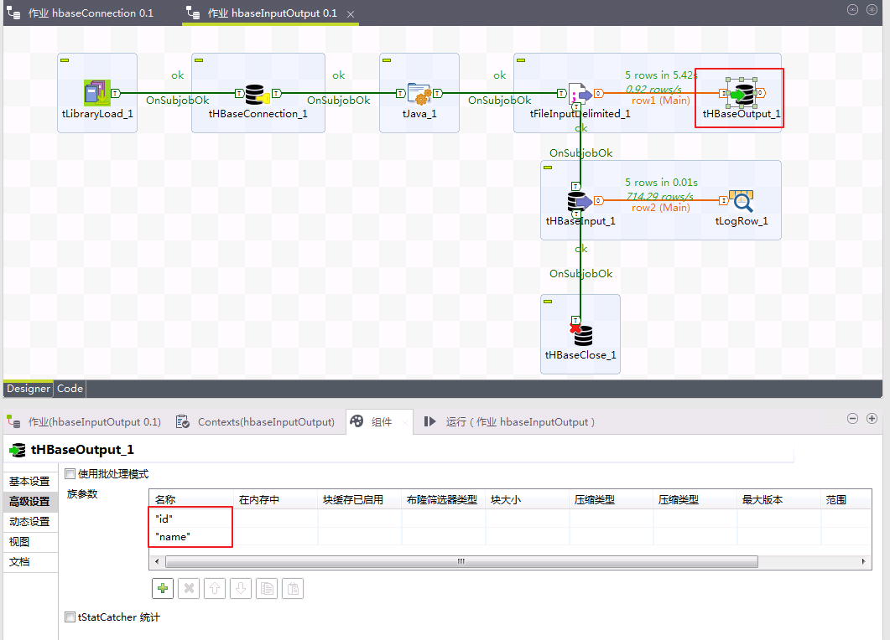
-
在“基本配置”中，勾选
使用一个现有连接，“组件列表”选择tHBaseConnection_1，“表名称”输入talendHbaseCreate，“表操作”选择如果表不存在，则创建表，输入id和name对应的“族名称”，“族名称”必须要用双引号包括，要不运行时会返回语法错误。
-
点击选中“tHBaseInput_1”，勾选
使用一个现有连接，“组件列表”选择tHBaseConnection_1，“表名称”输入talendHbaseCreate，输入id和name对应的“族名称”，“族名称”必须要用双引号包括，点击“编辑schema”右边的按钮增加两列，列名分别id和name。
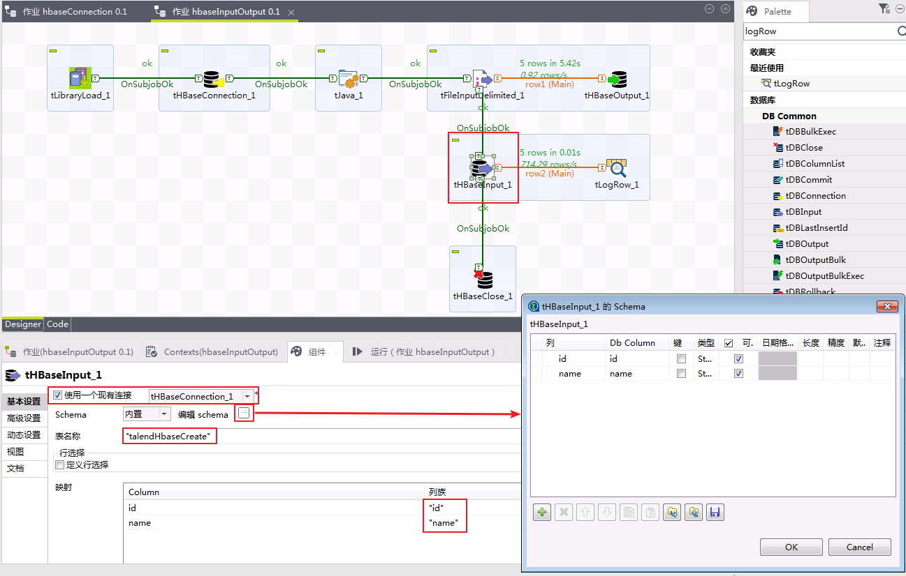
- 切换至“运行（作业hbaseInputOutput）”，点击
运行按钮。返回结果如下图所示，则表示Talend对接FusionInsight HBase成功，且创建表talendHbaseCreate并将本地文件数据输入表talendHbaseCreate，并且从表talendHbaseCreate查询返回数据。
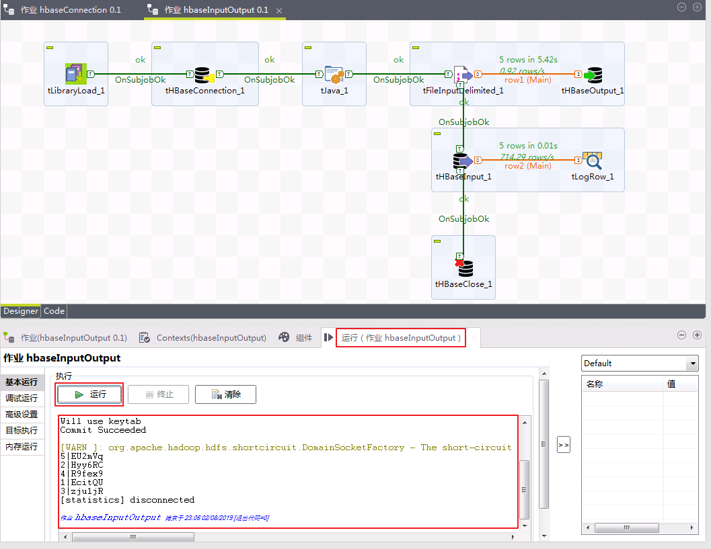
- 登录FusionInsight集群客户端，执行以下命令检查HBase表“talendHbaseCreate”。
hbase shell
scan 'hbaseInputOutputTest'
FAQ¶
- 向FusionInsight HDFS文件系统上传或者下载文件时，返回Client cannot authenticate via:[TOKEN, KERBEROS]
【问题描述】
使用Talend向FusionInsight HDFS文件系统上传或者下载文件时，上传或者下载的组件（例如tHDFSGet_1）采用“使用一个现有连接”，现有连接tHDFSConnection_1的属性类型是“存储库”时，运行时返回java.io.IOException: DestHost:destPort euleros-hd03:25000 , LocalHost:localPort user-PC/172.16.5.106:0. Failed on local exception: java.io.IOException: org.apache.hadoop.security.AccessControlException: Client cannot authenticate via:[TOKEN, KERBEROS]，且上传或者下载文件失败。


【解决方法】
tHDFSConnection_1使用的存储库FusionInsight_HDFS所属的Hadoop集群FusionInsight没有使用自定义的Hadoop配置。需要修改Hadoop集群FusionInsight使用自定义的Hadoop配置。
* 选择元数据->Hadoop Cluster->FusionInsight，右键FusionInsight选择Edit Hadoop Cluster。

* 勾选`使用自定义Hadoop配置`。

* 点击`Yes`。

- 对接FusionInsight Hive接口创建表的时候返回Cannot modify dfs.client.use.datanode.hostname at runtime。
【问题描述】
对接FusionInsight Hive接口创建表的时候，返回类似的错误：Error while processing statement: Cannot modify dfs.client.use.datanode.hostname at runtime. It is not in list of params that are allowed to be modified at runtime。可能涉及的有以下三个属性：dfs.client.use.datanode.hostname、mapred.job.name、hive.query.name。
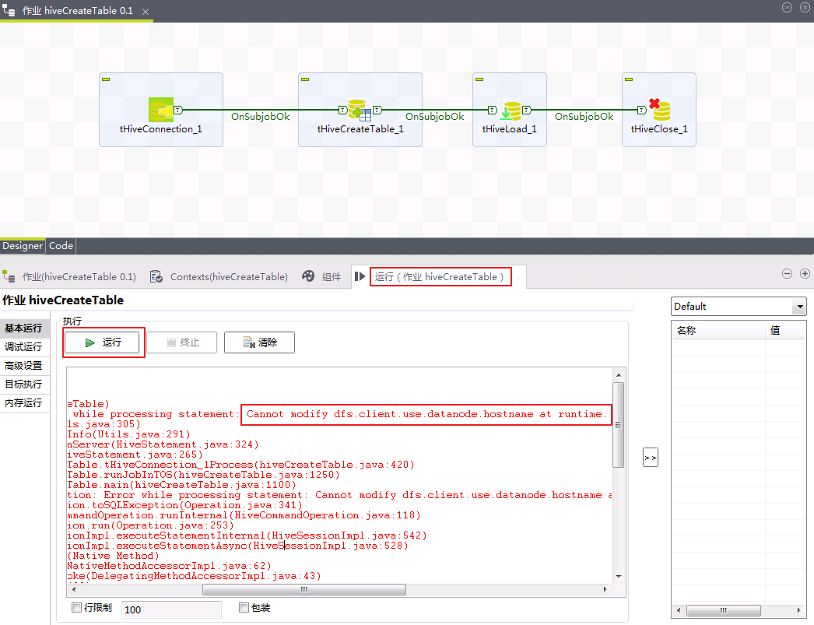
【解决方法】
登录FusionInsight Manager，在Hive服务的配置参数hive.security.authorization.sqlstd.confwhitelist.append新增|dfs\.client\.use\.datanode\.hostname|mapred\.job\.name|hive\.query\.name，然后重启Hive服务。
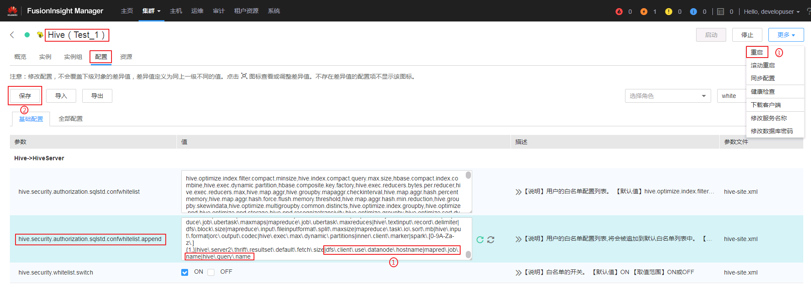